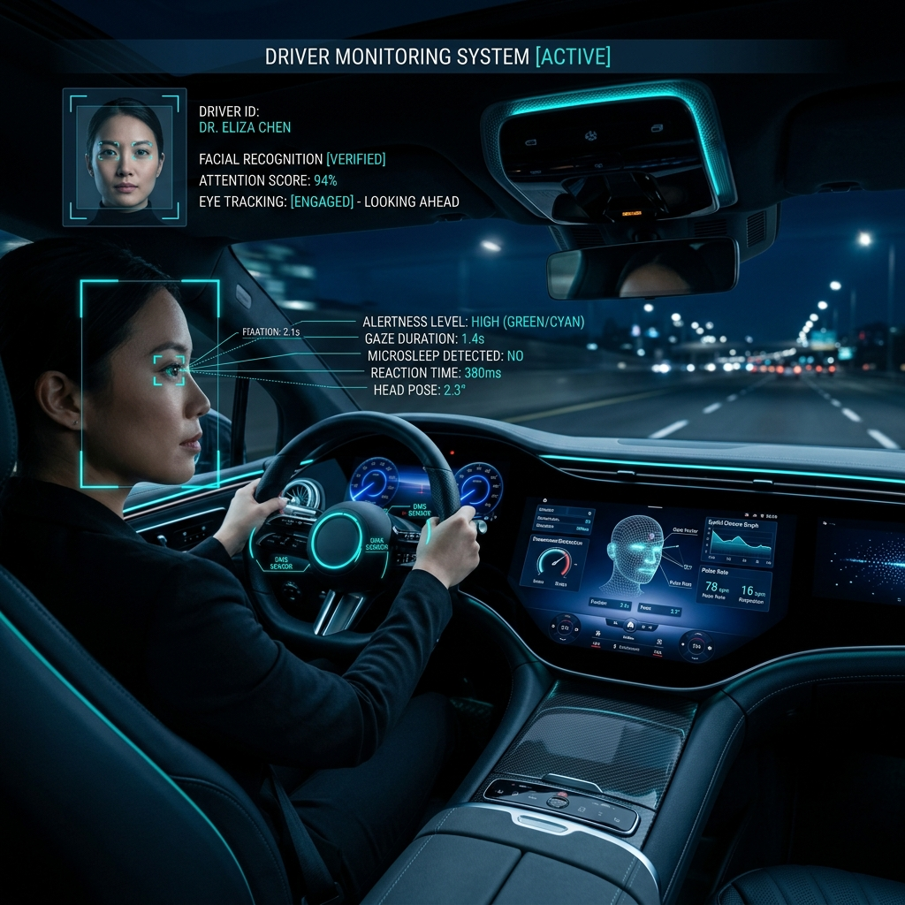
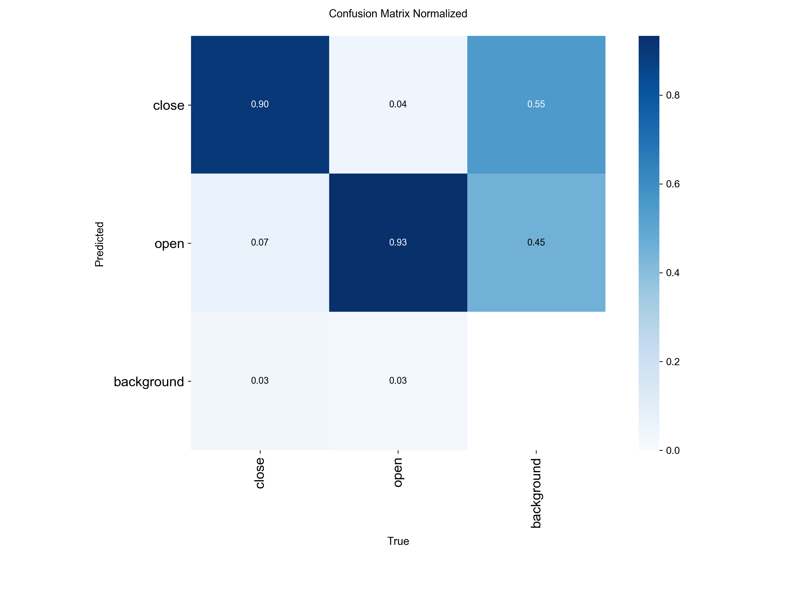
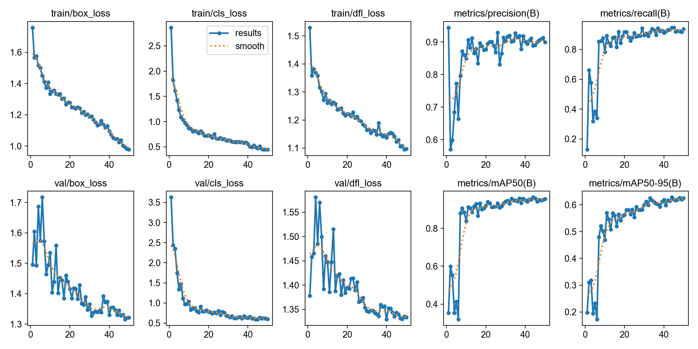
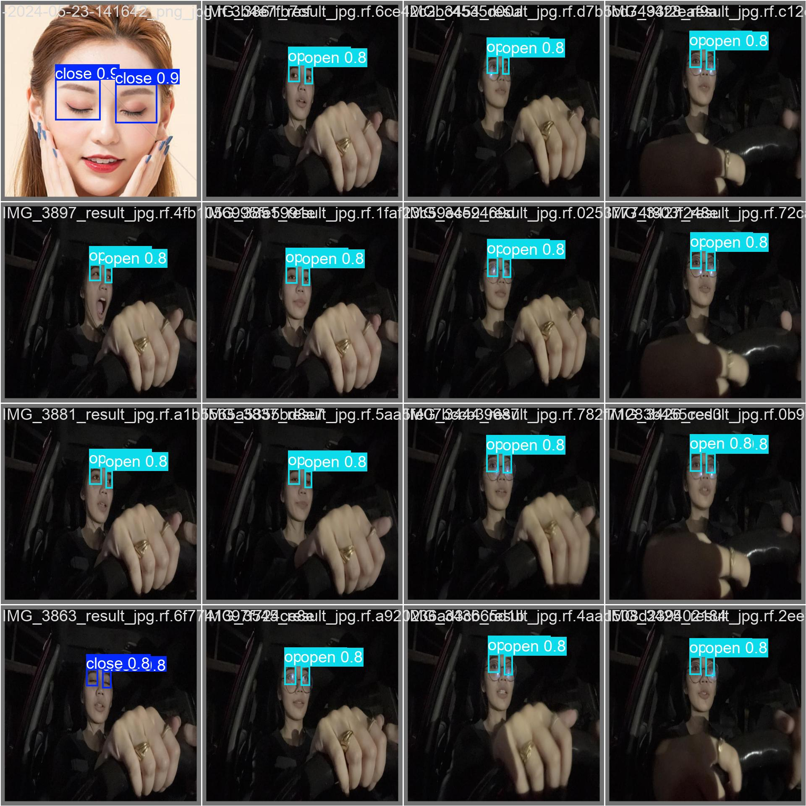

Real-Time Driver
Drowsiness Detection
@msu_iit project

@msu_iit project
Road safety remains a paramount concern as driver fatigue continues to be a leading cause of global vehicular accidents, accounting for thousands of fatalities annually. This project explores the development of an intelligent, non-intrusive monitoring system that leverages state-of-the-art computer vision to detect early signs of drowsiness in real-time. By utilizing the YOLOv11 nano architecture and Edge AI principles, this implementation prioritizes real-time behavioral analysis without the need for intrusive physiological sensors. The project aims to bridge the gap between high-precision deep learning models and low-power hardware constraints, providing a scalable and proactive safety mechanism for modern in-cabin environments.
✅ Develop high-precision eye-state classification.
✅ Curate specialized driver facial dataset.
✅ Optimize for low-latency ARM inference.
✅ Validate in real-time edge environments.
Directly supports SDG 3.6 by aiming to halve global deaths and injuries from road traffic accidents through proactive detection.
Contributes to SDG 9 by fostering innovation in sustainable transport systems and resilient infrastructure through AI integration.
Reduces significant economic losses from medical costs, vehicle damage, and insurance claims by preventing collisions.
Promotes the use of accessible, low-power hardware (Raspberry Pi) for sophisticated life-saving technology.
🔍 Dataset Curating: Aggregated and labeled 1,419 images from the Roboflow Universe, specifically targeting diverse eye-states and lighting conditions to ensure model robustness.
🏗️ Model Selection: Leveraged the YOLOv11 nano architecture, fine-tuning it for binary classification (Open vs. Closed eyes) while maintaining a minimal parameter count for speed.
🚀 Deployment: Implemented a Python-based inference pipeline optimized for the Raspberry Pi environment, utilizing OpenCV for real-time video stream processing and decision logic.



Standalone Raspberry Pi struggles with workload (~3-5 FPS).
💡 RECOMMENDATION
Incorporate an AI HAT (Hailo-8L) for 30+ FPS performance.
The project successfully demonstrates that YOLOv11n can achieve high detection accuracy for driver state monitoring. However, real-time performance on standalone edge hardware remains a bottleneck, necessitating hardware acceleration. Future development will focus on integrating NPU technology to achieve seamless real-time safety response.
[1] Ultralytics YOLOv11 (2024)
[2] Redmon et al., CVPR (2016)
[3] Roboflow Universe Dataset (2024)